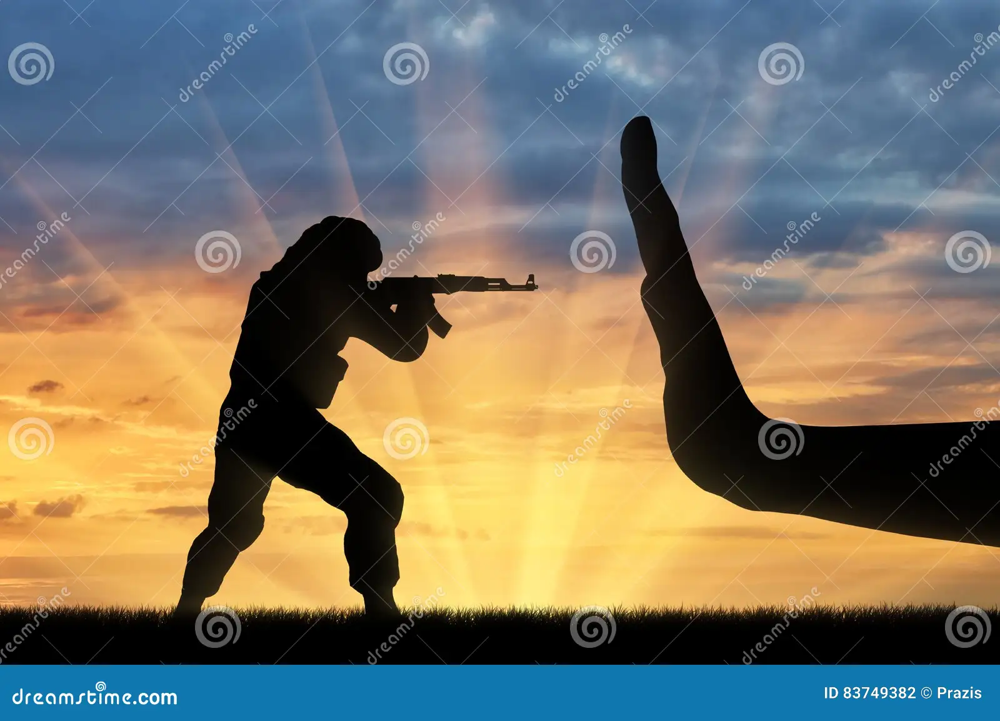
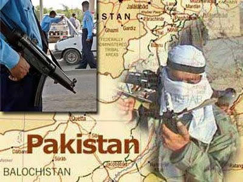
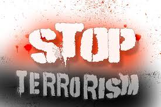

TERRORISM IN PAKISTAN


what is terrorism
Terrorism is the unlawful use of force or violence against persons or property to intimidate or coerce a government or its citizens to further certain political or social objectives. Law enforcement generally recognizes two types of terrorism: domestic and international.
Outlines:
1 Terrorism has become one of the most dangerous forms of crime.
2The main causes of terrorism.
3The Muslim concept of Islamic Fundamentalism
4Terrorism is different from political or liberation movement.
it must be fought against at all levels.
Terrorism has become one of the most dangerous forms of international crime. Terrorism means the threat or uses of force against civilians or armed forces for political or personal interest. Terrorists attack the civilian population to create terror or general harassment in society. They resort to bombing, killing, hijacking and large scale of destruction of property. A large number of innocent civilians have been killed in these savage attacks. A wave of terror and insecurity has traveled around the globe. People are wonder-struck and terrified at the cruel activities of terrorists in spite of great measures of security and defense.
“Fanaticism obliterates the feelings of humanity. “
Recent of the hijacking of American passenger airlines and crashing them against the towers of the World Trade Centre in New York and the Pentagon in Washington is probably the worst incident of terrorism in the world. Americal wants to punish some individuals and countries whom they blame for terrorist activities in various parts of the world. Usama bin Ladin and some Muslim countries are their specific targets.
Islam is the most misunderstood and misinterpreted religion in the West. A religion that stands for peace and justice has been misrepresented as a religion of war and fanaticism. The Muslims are depicted by the western media as extremists, fanatics, terrorists, backward and devoid of disciplines, On religious issues, They are emotional and intolerance. Fundamentalists believe that they are the right people and all the rest are heretics.
"It is better to understand a little
Than to misunderstand a lot.”
On the other hand, there is no organized Muslim media anywhere in the Muslim World that can refute this western disinformation and give an accurate picture of what is really going on. The west, in fact, is under the psychological pressure of the glorious past of the Muslims. Soon after the demise of communism in the Soviet Union, Islam was perceived as the ideological force to overcome the whole world.
The Muslim concept of Islamic fundamentalism is strict adherence to the age of the Holy Prophet (PBUH). It is an effort to implement the Islamic principles of the Golden age of the world of today for the revival of Islam. Jihad is a totally different act from terrorism. Jihad means the exertion, striving and endeavor for the cause of God. Its object is to bring an end to oppression and aggression against Islam. Its object is not to propagate Islam by use of the sword. It is not anti-wast bigotry and the revival of the ancient Islamic concept of expansionism.
The Quran has emphasized Jihad for a noble cause: “Fight against those who treat helpless men, women and children cruelly”. Jihad stands for noble deeds for elevating the moral character and for seeking refinement to attain nearness to Allah.

“Religion is nothing else but love to God and man.”
Terrorism is also different from political or liberation movement. The Kashmir liberation movement against India, the Palestine movement against Israel and Chechen liberation movement against Russia cannot be regarded as the terrorist movement. They are engaged in an armed struggle to get freedom from cruel rules. They are fighting against aggression.
“If we like them, they’re freedom fighters,
If we don’t like them, they’re terrorists” (Carl Sagan)
Terrorism is evil. It must be fought against at all levels. Governments and nations must join hands to crush this evil and its agents. At the same time, the United Nations must take steps to remove the germs of dissatisfaction, deprivation, and injustice from various religions of the world.

“Mankind must evolve for all human conflict a method
Which rejects revenge, aggression, and retaliation?
The foundation of such a method is love.” (Martin Luther King)
DEVELPOR; AGA TALISH
 Contact us on whatsapp ;03206902120
Contact us on whatsapp ;03206902120